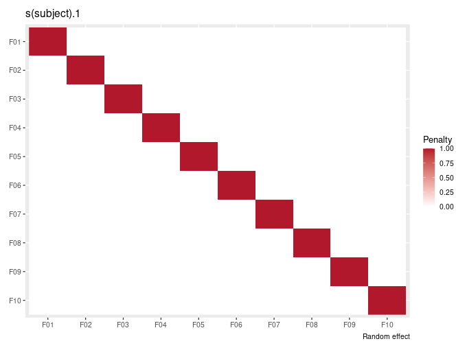
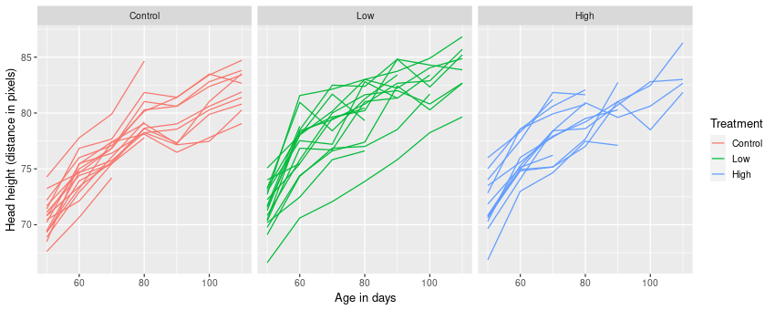
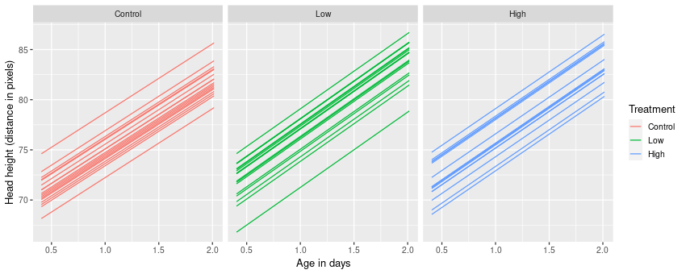
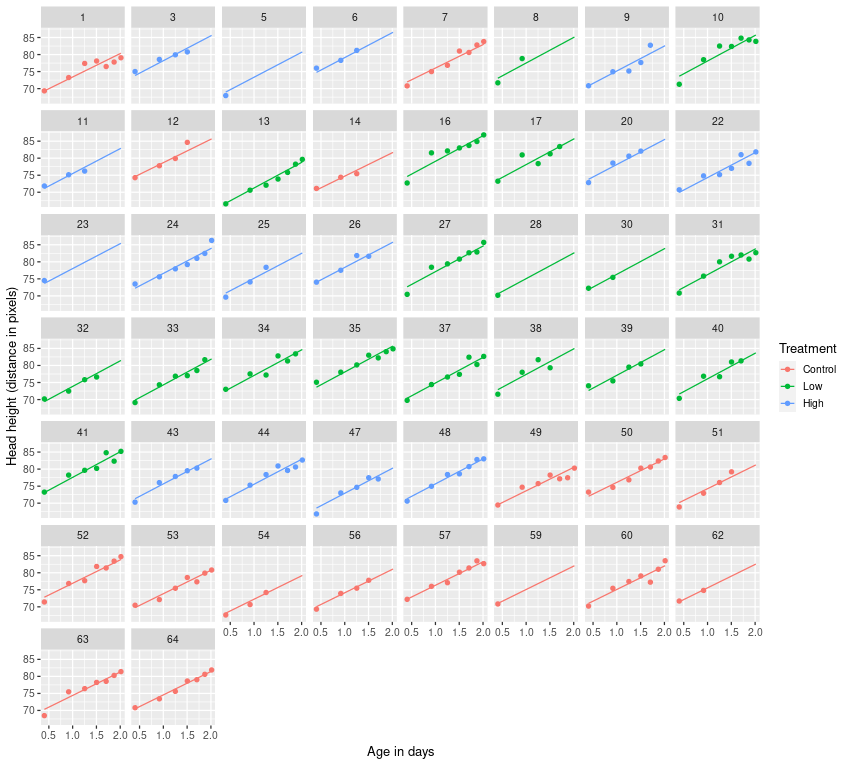
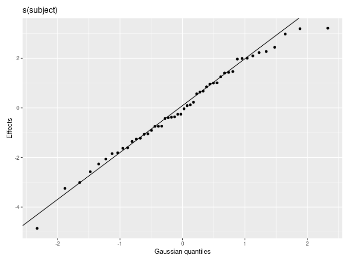

Using random effects in GAMs with mgcv
Posted in
Tagged
Blogroll
There are lots of choices for fitting generalized linear mixed effects models within R, but if you want to include smooth functions of covariates, the choices are limited. One option is to fit the model using gamm() from the mgcv 📦 or gamm4() from the gamm4 📦, which use lme() (nlme 📦) or one of lmer() or glmer() (lme4 📦) under the hood respectively. The problem with doing things that way is that you get PQL fitting for non-Gaussian models (😱) and the range of families for handling non-Gaussian responses is quite limited, especially compared with the extended families now available with gam(). brms 📦 is a good option if you don’t want to do everything by hand, but the MCMC can be slow. Instead, we could use the equivalence between smooths and random effects and use gam() or bam() from mgcv. In this post I’ll show you how to do just that.
Smooths as random effects
The sorts of smooths we fit in mgcv are (typically) penalized smooths; we choose to use some number of basis functions \(k\), which sets an upper limit on the complexity — wiggliness — of the smooth, and then we estimate parameters for the model by maximizing a penalized log-likelihood. The log-likelihood of the model is a measure of the fit (or lack there of), while the penalty helps us avoid fitting overly complex smooths.
In the sorts of models that can be fitted in mgcv, the penalty is a function of the model coefficients, \(\boldsymbol{\beta}\), and a penalty matrix1, which we write as \(\boldsymbol{S}\). The penalty then is \(\boldsymbol{\beta}^{\mathsf{T}} \mathbf{S} \boldsymbol{\beta}\). The penalty matrix measures the wiggliness of each basis function (on the diagonal), and how the wiggliness of one basis function affects the wiggliness of another (the off diagonals). Just as the \(\boldsymbol{\beta}\) scale the individual basis functions, they also scale penalty values in the penalty matrix; if you were to choose large weights for the most wiggly basis functions, the overall penalty \(\boldsymbol{\beta}^{\mathsf{T}} \mathbf{S} \boldsymbol{\beta}\) would increase by a lot more than if we used smaller weights for those really wiggly functions.
The penalty then acts to shrink the estimates of \(\boldsymbol{\beta}\) away from the values they would take if we weren’t doing a penalized fit and were instead fixing the wiggliness of the smooth at the maximum value dictated by \(k\). Put another way, the penalty shrinks the estimates for \(\boldsymbol{\beta}\) towards zero.
Random effects also involve shrinkage. With a random effect we’re trying to model subject specific effects (subject-specific intercepts, or subject-specific “slopes” of covariates) without having to explicitly estimate a fixed effect parameter for each subject’s intercept or covariate effect. Instead we think of the subject-specific intercepts or “slopes” as coming from distribution, typically a Gaussian distribution, with mean 0 and some variance that is to be estimated. The larger this random effect variance, the greater the variation among subject-specific intercepts, “slopes” etc. The smaller the random effect variance, the closer to zero the estimated effects are pulled. As a result, random effects shrink to, varying degrees, the estimated subject-specific effects, and how much they do that is related to the random effect variance.
If I abuse all standards of notation and represent the estimated random effects with \(\boldsymbol{\beta}\), you might get the feeling that perhaps there is some link between whats happening when we estimate random effects shrinking the \(\boldsymbol{\beta}\) towards zero, and the penalty applied to smooths that shrinks the \(\boldsymbol{\beta}\) towards zero. If you did, you’d be right, there is. And if so, there must be a penalty matrix that we can write down for a random effect — if we assume that each random intercept or “slope” is a basis function, the penalty matrix \(\mathbf{S}\) is a simple diagonal matrix, one row and column per subject, with a constant value on the diagonal (and zeroes everywhere else):

To complete the picture, when we fit a GAM, we’re maximising the penalised log-likelihood over both the model parameters \(\boldsymbol{\beta}\) and a smoothness parameter, \(\boldsymbol{\lambda}\). It’s \(\boldsymbol{\lambda}\) that actually controls how much price we pay for the wiggliness penalty as we add \(\boldsymbol{\lambda} \boldsymbol{\beta}^{\mathsf{T}} \mathbf{S} \boldsymbol{\beta}\) to the log-likelihood. It turns out that the variance of the random effect is equal to the scale parameter (the residual variance \(\sigma^{2}_{\varepsilon}\) in a Gaussian model for example) divided by \(\boldsymbol{\lambda}\).
This link between smooths and random effects is really cool; not only are we able to estimate smooths and GAMs using the machinery of mixed effects models, we can also estimate random effects using all the penalized spline machinery available for GAMs in mgcv.
OK, so that was all really hand-wavy and skipped over a lot of math and theory2, but I hope it gives you the intuition you need to understand how random effects are represented as smooths, through the identity penalty matrix.
Fitting random effects with mgcv
So much for the theory, let’s see how this all works in practice.
By way of an example, I’m going to use a data set from a study on the effects of testosterone on the growth of rats from Molenberghs and Verbeke (2000), which was analysed in Fahrmeir et al. (2013), from were I also obtained the data. In the experiment, 50 rats were randomly assigned to one of three groups; a control group or a group receiving low or high doses of Decapeptyl, which inhibits testosterone production. The experiment started when the rats were 45 days old and starting with the 50th day, the size of the rat’s head was measured via an X-ray image. You can download the data here.
For the example, we’ll use the following packages
pkgs <- c("mgcv", "lme4", "ggplot2", "vroom", "dplyr", "forcats", "tidyr")
## install.packages(pkgs, Ncpus = 4)
vapply(pkgs, library, logical(1), character.only = TRUE, logical.return = TRUE,
quietly = TRUE) mgcv lme4 ggplot2 vroom dplyr forcats tidyr
TRUE TRUE TRUE TRUE TRUE TRUE TRUE
We’ll also need the development version of the gratia 📦, which we can install with the remotes 📦 (if you don’t have that installed, install it first)
## install.packages("remotes")
## remotes::install_github('gavinsimpson/gratia')
library('gratia')We load the data — ignore the warning about new names as we deleted that column anyway
rats <- vroom('rats.txt', delim = ' ', col_types = 'dddddddddddd-')New names:
* `` -> ...13
Next we need to prepare the data for modelling. The variable transf_time is the main covariate of interest. It relates to the age of the rats in days via the transformation
\[\log (1 + (\mathtt{time} - 45) / 10)\]
where \(\mathtt{time}\) is the time variable in the data set. We also need to convert the group variable to a factor with useful levels to create a treatment variable and we convert subject — an identifier for each individual rat — a factor
rats <- rats %>%
mutate(treatment = fct_recode(factor(group, levels = c(2,1,3)),
Low = '1',
High = '3',
Control = '2'),
subject = factor(subject))The number of observations per rat is variable, with only 22 of the 50 rats having the complete seven measurements by day 110
rats %>%
na.omit() %>%
count(subject) %>%
count(n, name = "n_rats")# A tibble: 7 x 2
n n_rats
* <int> <int>
1 1 4
2 2 3
3 3 5
4 4 9
5 5 5
6 6 2
7 7 22
so there’ll be no averaging the response within subjects and doing an ANOVA.
Before we fit the models an explore how to work with random effects in mgcv, we’ll plot the data
plt_labs <- labs(y = 'Head height (distance in pixels)',
x = 'Age in days',
colour = 'Treatment')
ggplot(rats, aes(x = time, y = response,
group = subject, colour = treatment)) +
geom_line() +
facet_wrap(~ treatment, ncol = 3) +
plt_labsWarning: Removed 98 row(s) containing missing values (geom_path).

The model fitted in Fahrmeir et al. (2013) is
\[y_{ij} = \beta_0 + \gamma_{0i} + \beta_1 L_i \cdot t_{ij} + \beta_2 H_i \cdot t_{ij} + \beta_3 C_i \cdot t_{ij} + \gamma_{1i} \cdot t_{ij} + \varepsilon_{ij}\]
where
- \(\beta_0\) is the population mean of the response at the start of the treatment
- \(L_i\), \(H_i\), \(C_i\) are dummy variables encoding for each treatment group
- \(\gamma_{0i}\) is the rat-specific mean (random intercept)
- \(\gamma_{qi} \cdot t_{ij}\) is the rat-specific effect of
transf_time(random slope)
If this isn’t very clear — it took me a little while to grok what this meant and translate it to R speak — note that each of \(\beta_1\), \(\beta_2\), and \(\beta_3\) are associated with an interaction between the dummy variable coding for the treatment and the time variable. So we have a model with an intercept and three interaction terms with no main effects.
In lmer() we can fit this model with (ignore the singular fit warning for now)
m1_lmer <- lmer(response ~ treatment:transf_time +
(1 | subject) + (0 + transf_time | subject),
data = rats)boundary (singular) fit: see ?isSingular
If you’re not familiar with this model specification for the random effects, it specifies uncorrelated random effects for the subject-specific means (random intercept; (1 | subject)) and the subject_specific effects of transf_time (random slope; (0 + transf_time | subject)). The 0 in the formula for the latter suppresses the (random) intercept as we already included that as a separate term.
The reason we’re fitting uncorrelated random effects is because that’s all mgcv can fit; there’s no way to encode a covariance term between the two random effects.
The equivalent model fitted using gam() is
m1_gam <- gam(response ~ treatment:transf_time +
s(subject, bs = 're') +
s(subject, transf_time, bs = 're'),
data = rats, method = 'REML')Note:
- we specify two separate random effect smooths, one per random term,
- we indicate that the smooth should be a random effect with
bs = 're', - any grouping variables must be coded as a factor — that’s why we converted
subject(which is an integer vector) to a factor right after importing the data.
Let’s compare the fixed effect terms; first for the lmer() version
fixef(m1_lmer) (Intercept) treatmentControl:transf_time
68.607386 6.871128
treatmentLow:transf_time treatmentHigh:transf_time
7.506897 7.313854
and for the gam() version
coef(m1_gam)[1:4] (Intercept) treatmentControl:transf_time
68.607385 6.871130
treatmentLow:transf_time treatmentHigh:transf_time
7.506897 7.313859
which are close enough.
Next let’s look at the estimated variances of the random effect terms. First for the lmer() model:
summary(m1_lmer)$varcor Groups Name Std.Dev.
subject (Intercept) 1.8881
subject.1 transf_time 0.0000
Residual 1.2020
and now for the gam() model
variance_comp(m1_gam)# A tibble: 3 x 5
component variance std_dev lower_ci upper_ci
<chr> <dbl> <dbl> <dbl> <dbl>
1 s(subject) 3.56 1.89 1.51e+ 0 2.36e 0
2 s(subject,transf_time) 0.0000257 0.00507 8.21e-42 3.14e36
3 scale 1.44 1.20 1.09e+ 0 1.33e 0
Apart from being as close for the differences not to matter, we should also note that the variance for the rat-specific effect of transf_time is effectively 0. This is likely the cause of the singular fit warning from lmer(). The lower_ci and upper_ci variables indicate the limits of a 95% confidence interval on the standard deviation of each variance component; the coverage can be controlled via the coverage argument to variance_comp(). The confidence interval for the rat-specific time effect variance is huge, again indicating that there really isn’t much variation at all in this component.
Here we used the variance_comp() function from gratia to extract the variance components, which expresses the random effects as their equivalent variance components that you’d see in a mixed model output. variance_comp() is a simple wrapper to mgcv::gam.vcomp(), which is doing all the hard work, but variance_comp() suppresses the annoying printed output produced by gam.vcomp() and returns the variance components as a tibble.
You can see a nicer version of the variance components for lmer() by printing the whole summary() but it produces a lot of output; the bit we are interested in just now is in the section labelled Random effects:
summary(m1_lmer)Linear mixed model fit by REML ['lmerMod']
Formula: response ~ treatment:transf_time + (1 | subject) + (0 + transf_time |
subject)
Data: rats
REML criterion at convergence: 932.4
Scaled residuals:
Min 1Q Median 3Q Max
-2.25576 -0.65898 -0.01164 0.58358 2.88310
Random effects:
Groups Name Variance Std.Dev.
subject (Intercept) 3.565 1.888
subject.1 transf_time 0.000 0.000
Residual 1.445 1.202
Number of obs: 252, groups: subject, 50
Fixed effects:
Estimate Std. Error t value
(Intercept) 68.6074 0.3312 207.13
treatmentControl:transf_time 6.8711 0.2276 30.19
treatmentLow:transf_time 7.5069 0.2252 33.34
treatmentHigh:transf_time 7.3139 0.2808 26.05
Correlation of Fixed Effects:
(Intr) trtC:_ trtL:_
trtmntCnt:_ -0.340
trtmntLw:t_ -0.351 0.119
trtmntHgh:_ -0.327 0.111 0.115
optimizer (nloptwrap) convergence code: 0 (OK)
boundary (singular) fit: see ?isSingular
One of the nice things about the output from the gam() model is that the summary() contains a test for the random effects
summary(m1_gam)Family: gaussian
Link function: identity
Formula:
response ~ treatment:transf_time + s(subject, bs = "re") + s(subject,
transf_time, bs = "re")
Parametric coefficients:
Estimate Std. Error t value Pr(>|t|)
(Intercept) 68.6074 0.3312 207.13 <2e-16 ***
treatmentControl:transf_time 6.8711 0.2276 30.19 <2e-16 ***
treatmentLow:transf_time 7.5069 0.2252 33.34 <2e-16 ***
treatmentHigh:transf_time 7.3139 0.2808 26.05 <2e-16 ***
---
Signif. codes: 0 '***' 0.001 '**' 0.01 '*' 0.05 '.' 0.1 ' ' 1
Approximate significance of smooth terms:
edf Ref.df F p-value
s(subject) 43.723610 49 11.51 <2e-16 ***
s(subject,transf_time) 0.001387 47 0.00 0.744
---
Signif. codes: 0 '***' 0.001 '**' 0.01 '*' 0.05 '.' 0.1 ' ' 1
R-sq.(adj) = 0.926 Deviance explained = 94%
-REML = 466.2 Scale est. = 1.4448 n = 252
This test is due to Wood (2013). It is based on a likelihood ratio test and uses a reference distribution that is appropriate for testing a null hypothesis that is on the boundary of the parameter space (the null, that the variance is 0, is on the lower boundary of possible values for the parameter — you can’t have a negative variance!)
There is little evidence in support of the rat-specific time effects, reflecting what we saw when we looked at the variance components above.
If we look at the estimated degrees of freedom (EDF; the edf column) for each of the “smooths” we see the shrinkage in action. The Ref.df column contains the maximum degrees of freedom for each term, used in the calculation of the p value. The rat-specific mean distances — the s(subject) term — have only been shrunk a little to an EDF of ~43.7. In contrast, the EDF for the rat-specific effects of time has been shrunk to effectively zero.
The EDFs for smooths can be extracted from a fitted model with edf()
edf(m1_gam)# A tibble: 2 x 2
smooth edf
<chr> <dbl>
1 s(subject) 43.7
2 s(subject,transf_time) 0.00139
To plot the estimated time effects for each rat, we need to produce a new data frame with values of the range of transf_time for each rat, and include the relevant treatment value for the rat also. We do this with expand() and nesting() from the tidyr 📦.
new_data <- tidyr::expand(rats, nesting(subject, treatment),
transf_time = unique(transf_time))which we then use to predict from the model
m1_pred <- bind_cols(new_data,
as.data.frame(predict(m1_gam, newdata = new_data,
se.fit = TRUE)))which gives us something we can plot easily with ggplot
ggplot(m1_pred, aes(x = transf_time, y = fit, group = subject,
colour = treatment)) +
geom_line() +
facet_wrap(~ treatment) +
plt_labs
gam()We can also compare the fitted curves with the observed data
ggplot(m1_pred, aes(x = transf_time, y = fit, group = subject,
colour = treatment)) +
geom_line() +
geom_point(data = rats, aes(y = response)) +
facet_wrap(~ subject) +
plt_labsWarning: Removed 98 rows containing missing values (geom_point).

gam()A simpler model, which drops the rat-specific effects of transf_time is
\[y_{ij} = \beta_0 + \gamma_{0i} + \beta_1 L_i \cdot t_{ij} + \beta_2 H_i \cdot t_{ij} + \beta_3 C_i \cdot t_{ij} + \varepsilon_{ij}\]
which drops the \(\gamma_{qi} \cdot t_{ij}\) term, excluding the rat-specific time effects from the model.
m2_lmer <- lmer(response ~ treatment:transf_time +
(1 | subject),
data = rats)
m2_gam <- gam(response ~ treatment:transf_time +
s(subject, bs = 're'),
data = rats, method = 'REML')As we should now expected, the two models have estimated variance components that are essentially equivalent. First for the lmer() fit:
summary(m2_lmer)$varcor Groups Name Std.Dev.
subject (Intercept) 1.8881
Residual 1.2020
and now for the gam() version
variance_comp(m2_gam)# A tibble: 2 x 5
component variance std_dev lower_ci upper_ci
<chr> <dbl> <dbl> <dbl> <dbl>
1 s(subject) 3.56 1.89 1.51 2.36
2 scale 1.44 1.20 1.09 1.33
We could use the anova() method for "gam" fits but for fully penalized terms like random effects, the test isn’t very good and p values can be badly biased. Wood (2017, p. 315) says of the test “As expected, the test is clearly useless for comparing models differing in [their] random effect structure.” So, maybe give this one a miss.
Using AIC() to compare the models is also an option:
AIC(m2_gam, m1_gam) df AIC
m2_gam 48.98553 852.9313
m1_gam 48.98931 852.9371
AIC clearly favours the simpler model as the fits of the two models are essentially the same. Note that because the EDF of the s(subject, transf_time) was so close to zero, we don’t pay much of a penalty for including this term in the model, and hence the AICs of the two models are very similar (typically we’d expect that where two models have the same fit, the AIC for the more complex one would be the larger value).
Note that the AIC computed for the gam() model is a conditional AIC, where the likelihood is of all model coefficients set to their maximum penalized likelihood estimates. The AIC for an lmer() fit is a marginal AIC, where all the penalized coefficients are viewed as random effects and integrated out of the joint density of the response and random effects.
The conditional AIC for the gam() fit would be anti-conservative, especially so in the case of models containing random effects. The upshot of that is that the conditional AIC would typically choose a model with a random effects structure that isn’t in the true model if no steps were taking to account for smoothness parameter selection in the EDF calculation. The AIC() method for gam() fits applies a suitable correction to the model EDF to account for smoothness parameter selection, resulting in an information criterion that has mostly good properties.
draw(m2_gam, parametric = FALSE)
We need parametric = FALSE here because at the time of writing there is a bug in the code that handles parametric fixed effects.
It’s not all good news
It all seems a little too good to be true, doesn’t it! We have a way to fit models with random effects that works well, allows for tests of random effect terms against a null of 0 variance, and which allows us to use all the extended families that gam() allows including some complex distributional model families.
Well, as they say, there is no free lunch; the main issue with fitting random effects as smooths within gam() fits is to do with efficiency. lmer() and glmer() use very efficient algorithms for fitting the model, including the use of sparse matrices for the model terms. Because gam() fits need the full penalty matrix for each random effect, and gam() currently doesn’t use any sparse matrices for efficient computation, gam() fits are going to get very slow as the number of random effects increases: the larger the number of subjects (levels) the slower things will get. The same will happen the greater the number of complex random effect terms you include the model.
Basically, if you have random effects with many hundreds or thousands of levels (subjects), expect the time it takes to fit your gam() to increase dramatically, and expect the memory usage to increase markedly too.
Also, running summary() on a model with random effects with many levels or lots of random effects terms is also going to be slow: the test for the random effect terms is quite computationally expensive. If you are mostly interested in the other model terms, setting the re.test argument to FALSE will skip the tests for random effects (and other terms with zero dimension null space), allowing the summary for the other terms to be computed quickly.
Fin
In this post I showed how random effects can be represented as smooths and how to use them practically in in gam() models. I hope you found it useful. If you have any comments or questions, let me know them in the comments below.
Social